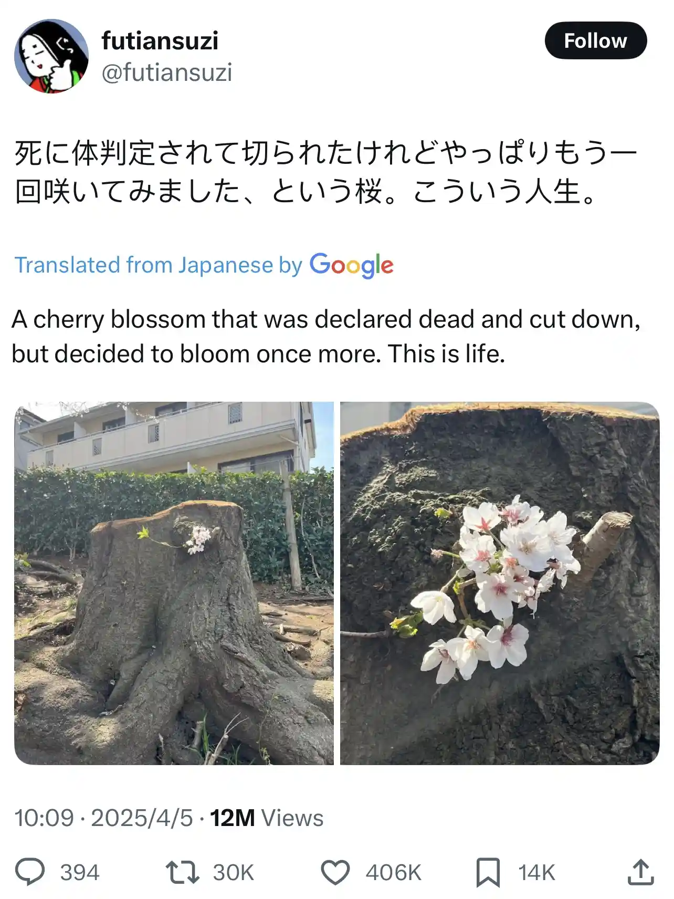

Happy Tuesday! Welcome back from Spring Break! Thank you for supporting the Daily Bulletin project. Unfortunately, the section "Delicious Dinings" is unavailable today since Shared Weekly Menu was not updated in time.
- Book a meeting with the WellCo chairs.
- Provide feedback to WellCo through the WellCo Line.
- Sign up to take over a WellCo session.
- Suggest improvements to the Daily Bulletin project.
- Unsubscribe if you no longer wish to receive emails from the Daily Bulletin project.
Wellbeing Inspirations
Want to contribute to a future Daily Bulletin? Share your inspirations to give everyone some morning wellbeing energy!
Photo of the Day

Retrieved from X (Twitter).
Important Events
| Day | Time | Event | Location |
|---|---|---|---|
| Tue | 18:00–19:00 | FEMO | Great Hall |
| 20:00–21:00 | SusCo | Great Hall | |
| Wed | 06:36–07:30 | KHC | — |
| 17:00–19:00 | Wellbeing Drop-in | Health Centre | |
| 18:00–19:00 | WellCo ☀️ | Great Hall | |
| 19:00–20:00 | P6 | Great Hall |
Retrieved from What's On This Week.
Today in History
- 1500 – A fleet commanded by Pedro Álvares Cabral anchored off present-day Brazil; he later claimed the land for the Portuguese Empire.
- 2016 – The Paris Agreement, an international treaty on climate change, opened for signature and was signed by 175 parties.
Retrieved from Wikipedia.
Today in News
- Pope Francis, first Latin American pontiff who ministered with a charming, humble style, dies at 88
- Harvard sues Trump administration to stop the freeze of more than $2 billion in grants
- Wall Street and the dollar tumble as investors retreat further from the United States
Retrieved from the Associated Press.